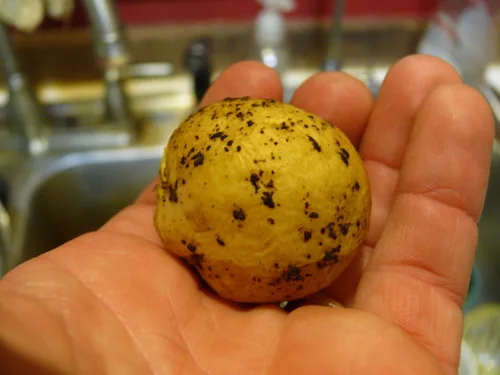

马铃薯块茎表皮粘有黑色硬痂
收获的马铃薯冲洗后仍可能像沾着土。逐个查看皮上黑痂，并与芽眼旁一冲即散的泥土对比。

现场检查
黑痣病形成的黑色休眠体形状不规则，附在表面。取一枚检查用块茎，用指甲轻拨一处，看下方表皮是否完整。
鉴别相似表现
与表皮连成一体的木栓组织更像普通疮痂。若有深入薯肉的孔洞或湿软组织，即便同时有黑痣，也需另查原因。
处理选择
收获时检查土面以下茎上有无褐色凹陷，并比较弱株和健株结的薯。地下茎和块茎上的表现外形差别很大。
后续复查
受影响薯块避免留种，分别记录地块与种薯批次。一次收获发现黑痣，无法单凭外观断定最初来自土壤还是种薯。
寄主检查要点
分别检查匍匐茎连接处与其余薯皮，记录每穴有黑痂的块茎数，包含只有少数细小黑点的薯。
对照马铃薯清洗前后的黑块。塞在芽眼里的泥可能遇水松动，黑痣状菌核却可能紧贴在其余完好的表皮上。若计划作种薯，还要另外检查萌芽状况。